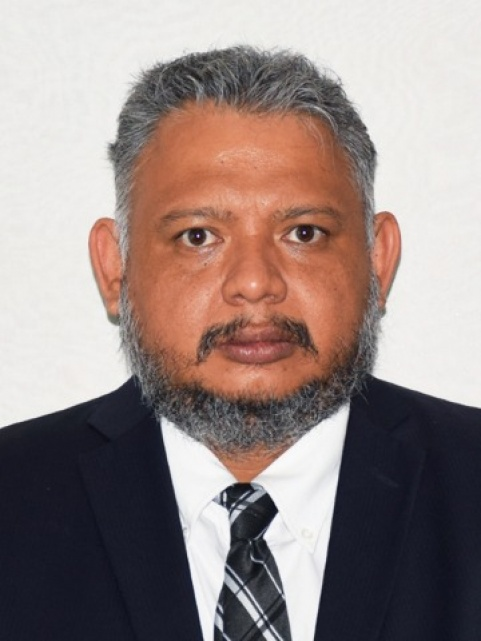

More than 5 years of experience as a math teacher.
Education
- Licenciado en Informática
- 2001-2005. Tecnológico Nacional de México - Tec Morelia
- Maestría en Tecnologías de Información y Comunicación
- 2014-2016. Universidad Interamericana para el Desarrollo - UNID Morelia

Profesional Experience
- Tecnológico Nacional de México - Tacámbaro
- 2005-current. Profesor en las carrera de Ingeniería en Sistemas Computacionales
- 2019-current. Profesor en las carrera de Ingeniería en Gestión Empresarial
- 2019-current. Profesor en las carrera de Ingeniería Innovación Agricola Sustentable
- Colegio de Bachilleres del Estado de Michoacán Plantel Tacámbaro
- 2007-current. Profesor de Matemáticas
Other
- Over 35 online courses
- Certificate profesional techer